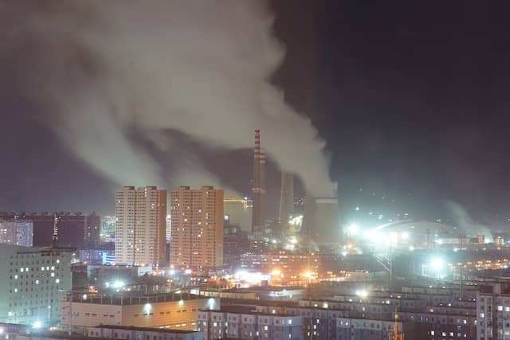

Air Pollution in Malaysia
The current PM2. 5 concentration in Malaysia is 1.1 times above the recommended limit given by the WHO 24 hrs air quality guidelines value.
Air of poor quality does not derive from a single, major source. There are millions of tiny sources and factors that make it up. For example, even air humidity can affect air pollution. Therefore, the only efficient way to prevent the further deterioration of the air we breathe in, is by reducing or eliminating as many of these sources as possible.
The importance of air pollution awareness is based on the fact that every person is responsible for producing pollutants. Whether it is by using combustion cars, old-fashioned heating stoves or by flying on vacation, we all add a brick to the building called 'poor air quality'. Yet, many people do not realize that. Therefore, raising air pollution awareness is crucial by teaching people about their impact on the environment, it will be easier to encourage them to give up on some of the most detrimental actions
How to raise air pollution awareness?
There are several ways to increase the air pollution awareness in your community. The local governments have the authority to introduce programs that will truly inform their citizens about their effect on the air quality. These initiatives include:
- Launching educational programs.
- Installing air quality monitoring systems and providing the citizens with data.
- Informing the citizens about the acceptable levels of formaldehyde and other pollutants.